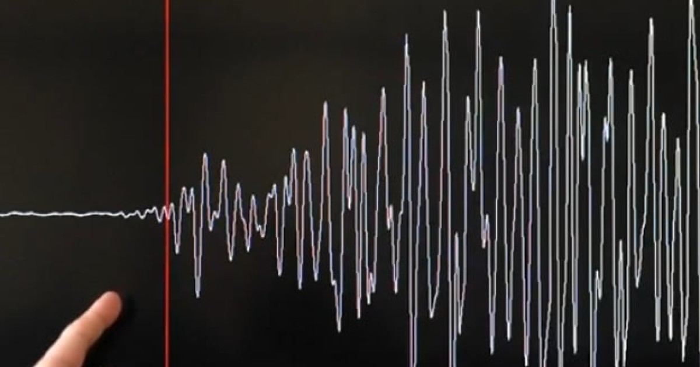
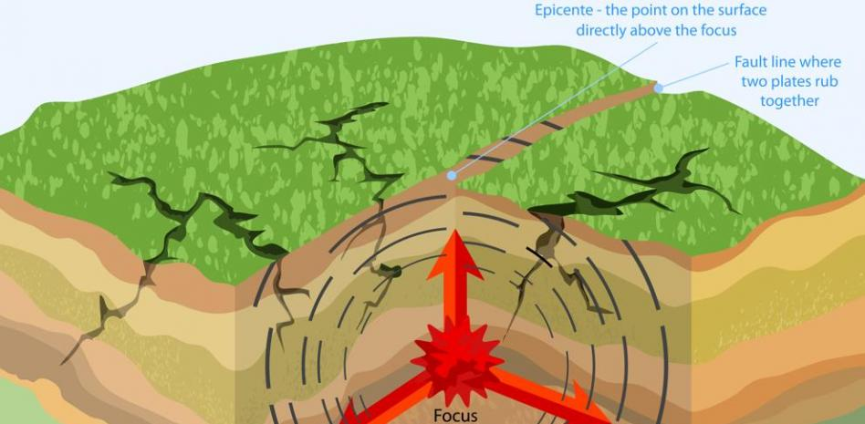
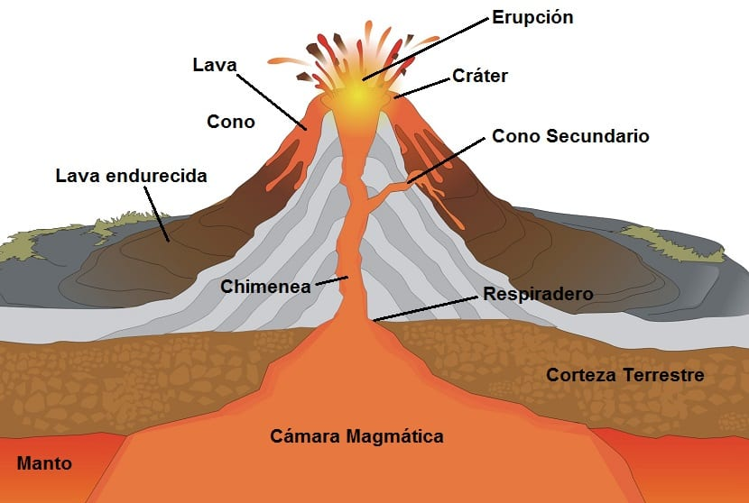
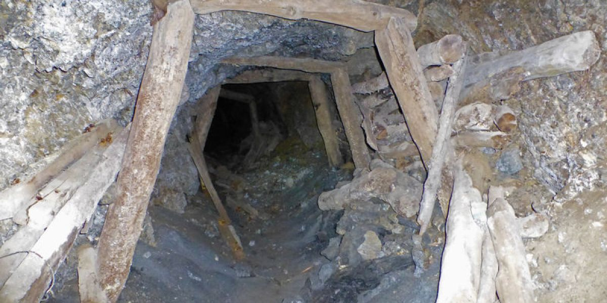

Tipos de sismos |
|
|
Los sismos se pueden clasificar en función de la fuente que los origina, esto es, sismos naturales y sismos artificiales; a continuación se presenta una breve descripción éstos. 
Sismos NaturalesSismos Tectónicos. Se generan por la actividad propia de las placas tectónicas. De estos sismos, se han definido dos clases: los interplaca, ocasionados por la interacción en las zonas de contacto entre placas, y los intraplaca, que se generan en la parte interna de las placas, aun en zonas donde se ha llegado a suponer un nivel nulo de sismicidad. 
Sismos Volcánicos. Son sismos generados por la actividad volcánica. Son de menor magnitud que los sismos tectónicos y casi siempre son imperceptibles para la población de los alrededores. 
Sismos de Colapso. Sismos generados por el colapso de techos y paredes en antiguas minas o cavernas. Debido a las dimensiones que puede tener este tipo de fuentes, la magnitud de estos sismos es pequeña y solamente es percibido por personas que se encuentren muy cerca del área afectada. 
Sismos ArtificialesSon sismos originados por la actividad del hombre, por ejemplo en la industria minera, donde se realizan detonaciones para poder extraer el material de interés; lo mismo ocurre en zonas de pruebas nucleares. En el caso de estas últimas, la energía liberada se compara burdamente a la de un sismo de magnitud 4 ó 5, en la escala de Richter. 
|
|